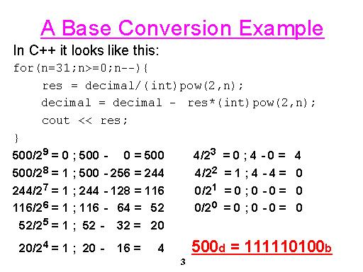

Assignment #1
Write a program that receives an integer and prints it in binary.
There are 2 ways to perform this:
- Using a mask and the shift operator (<<) print each bit of
the 32-bit integer.
- Convert the number to binary using the following algorithm:

Use both ways in your program.
The program should work for both negative and positive numbers.
(Hint: There is
no need to perform two's-complement conversion.)